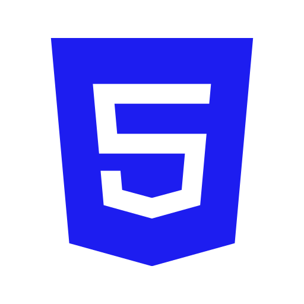
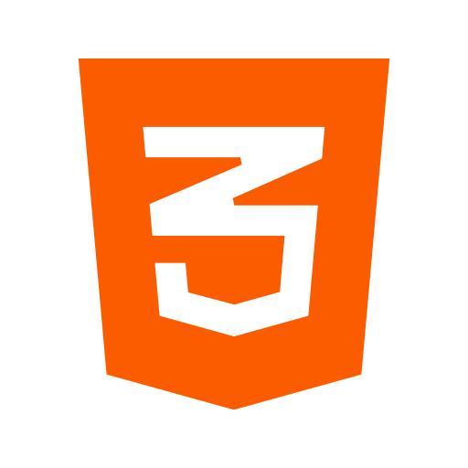

Jorge Rivera
Front End Developer
Sobre Mi
Soy un profesional apasionado por las tecnologías y la programación, que busca desarrollarse por completo en el mundo del desarrollo de aplicaciones. La responsabilidad, autosuficiencia y vocación por brindar servicios de excelencia son cualidades que sin lugar a dudas me definen. Gracias a experiencias actuales y previas, tuve la oportunidad de desempeñarme en gestión de equipos, liderazgo y negociación.
Disfruto de participar en resolución de problemas y el desarrollo de soluciones. Me comprometo con mis funciones y disfruto del trabajo eficiente en equipos. Siempre busco adquirir nuevos conocimientos y poder aplicarlos a mi vida laboral y personal.
Mi objetivo es poder incorporarme en una empresa donde poder desarrollar profesionalmente mi interés y pasión por las Tecnologías y la Programación, con foco en aplicaciones Web y Mobile. Formar parte de un grupo de trabajo con compromiso, dedicación y progreso.
Estudios
Desde marzo de 2021, me encuentro estudiando tanto autodidacta, como en instuciones, desarrollo Front End con React. Al mismo tiempo, voy incursionando en otras herramientas y tecnologias que contribuyan a mis capacidades como Front End.
Referente al Idioma Ingles, estudié durante 10 años (1992-2000) y obtuve el titulo de 6to año en Asociación Argentina de Cultura Inglesa. Desde entonces, continuo utilizando el idioma en mi vida laboral y personal.
En el 2007, conclui de forma satisfactoria la carrera de Tecnico Superior en Periodismo, la cual me brindo valiosas herramientas para el analisis y redacción de comunicaciones.
Certificados
- JavaScript - Coderhouse - Dic. 2021
- ReactJS - CoderHouse - Ene. 2022
- Desarrollo Fullstack - UTN - Ago. 2021
- Idioma Ingles - AACI - 1992/2000
- Auditor Sist. de Gestión - Bureau Veritas - Mar. 2015
- Tec. Sup. Comunicación - Inst. Grafotécnico - 2005
-
DB y SQL / Java Incial / Paradigma de Objetos
J2SE 6.0 - Educación IT - 2011 - 2012
Tecnologias
- 
- 
-

-

-

-

-

-

-

-

Experiencia
Jefe de Auditoria - Grupo Servicios Maritimos (2014 - Actualidad)
Gestión de proyectos integrales. Gestión y Liderazgo de equipos especiales de trabajo. Negociación/Mediación con Prefectura y Staff Naviero. Auditor Interno sobre Sistemas de Gestión de Seguridad. Análisis de incidentes, accidentes y desvíos en los Sistemas de Gestión internos. Elaboración de propuestas comerciales / Redacción de acuerdos de trabajo. Confección de Presupuestos y cotizaciones especiales. Atención a clientes especiales. Conciliación de cuentas. Redacción de planes y procedimientos en español e inglés.
Analista de Operaciones - VESSEL S.A. (2008 - 2014)
Gestión de operaciones de la Flota. Confección de Planos de Carga. Gestión de provisiones a bordo. Control de gastos y facturaciones. Confección de informes anuales de rendimiento
Encargado de Deposito - Herboristeria Alsina SRL (2003 - 2008)
Confección, seguimiento, recepcion y control de pedidos. Control y seguimiento de Stock. Confeccion de pedidos y seguimiento logistico. Atención al público y proveedores.
Proyectos

Contacto
Si te interesa mi perfil, tienes alguna consulta o sugerencia, o crees que te puedo ayudar, no dudes en contactarme.